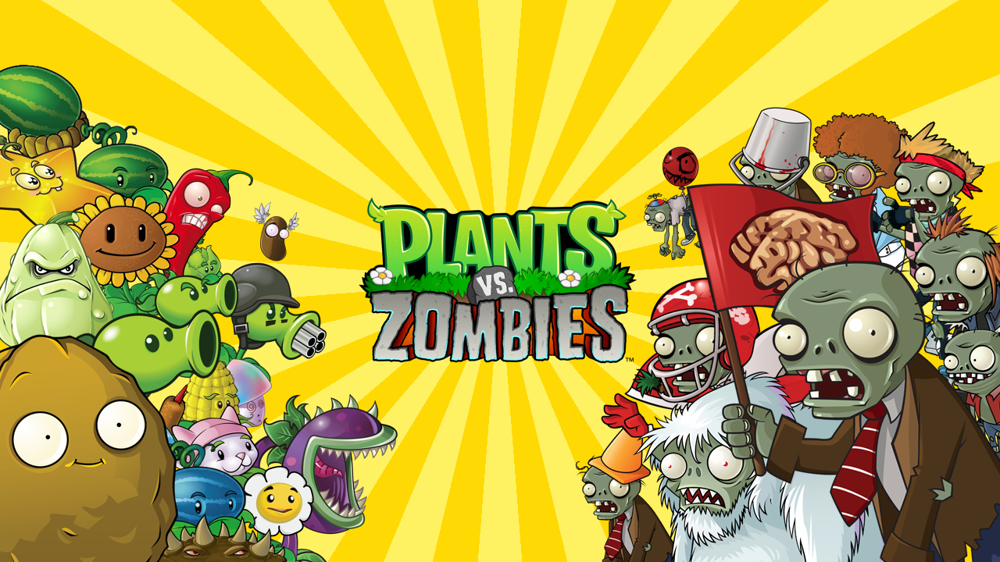

Os 10 melhores jogos singleplayer que já joguei!
02/03/2024 16h39 Atualizado hojeDê um passo à frente para descobrir os jogos singleplayer que deixaram uma marca duradoura em minha jornada como gamer. Explore mundos vívidos, mergulhe em narrativas profundas e desfrute de desafios que testam não apenas suas habilidades, mas também sua imaginação. Estes são os 10 jogos singleplayer que, para mim, representam o ápice da excelência no mundo dos videogames.
10. Plants vs. Zombies

Tipo de jogo: Estratégia, Tower Defense
Plants vs. Zombies é um jogo de estratégia que mistura ação e humor de uma forma única. Neste clássico, você assume o papel de um jardineiro destemido que defende sua casa de uma horda de zumbis invasores usando uma variedade de plantas com habilidades especiais.
Com uma jogabilidade viciante e personagens carismáticos, este jogo conquistou o coração de milhões de jogadores ao redor do mundo. Desde seu lançamento em 2009, Plants vs. Zombies tornou-se um marco na história dos jogos casuais, combinando desafios estratégicos com uma estética colorida e cativante.
Para muitos, Plants vs. Zombies é mais do que apenas um jogo - é uma fonte de nostalgia e boas lembranças. Passar horas defendendo o gramado da invasão zumbi tornou-se uma experiência inesquecível para muitos jogadores, incluindo eu, que passei horas e horas imerso nesse universo divertido e envolvente.
09. Cuphead

Tipo de jogo: Ação, Run and Gun
Cuphead é um jogo de plataforma e ação desenvolvido pelo Studio MDHR e lançado em 2017. Seu estilo de arte único, inspirado nos desenhos animados da década de 1930, é um dos elementos mais marcantes do jogo, cativando jogadores com sua estética retro e colorida.
Na história, os protagonistas Cuphead e Mugman devem enfrentar uma série de desafios e chefes em busca de saldar uma dívida com o Diabo. Com sua jogabilidade desafiadora e trilha sonora envolvente, Cuphead oferece uma experiência de jogo memorável e gratificante.
Cuphead não é apenas um jogo, é uma homenagem aos clássicos da animação e uma obra de arte interativa que continua a encantar jogadores de todas as idades. Sua dificuldade desafiadora e seu estilo visual único garantem que seja lembrado como um dos grandes jogos indie da última década.
8. Undertale

Tipo de jogo: RPG
Undertale é um RPG indie lançado em 2015, desenvolvido por Toby Fox. Este jogo inovador cativa os jogadores com sua narrativa envolvente e mecânicas de jogo únicas.
No mundo de Undertale, humanos e monstros coexistem, nem sempre em harmonia. O jogador assume o papel de uma criança que cai em um submundo habitado por monstros e precisa encontrar uma maneira de voltar para casa.
O que torna Undertale tão especial é a maneira como subverte as expectativas dos jogadores e desafia os tropos comuns dos RPGs. Com seu sistema de batalha baseado em escolhas, o jogo permite que os jogadores decidam como interagir com os personagens e o mundo ao seu redor, levando a múltiplos finais e uma experiência verdadeiramente personalizada.
7. Portal 2

Tipo de jogo: Puzzle
Portal 2 não é apenas um jogo, é uma experiência única que desafia não só suas habilidades de resolução de quebra-cabeças, mas também sua imaginação. O humor inteligente e a narrativa envolvente combinam-se perfeitamente com os desafios de física e lógica que o jogo oferece. É uma jornada através dos corredores misteriosos da Aperture Science que cativa desde o primeiro momento até o último. A adição do modo cooperativo só aumenta a diversão, permitindo que você e um amigo resolvam desafios juntos, o que só faz deste jogo um clássico instantâneo e inesquecível.
6. Devil May Cry 5

Tipo de jogo: Ação, Hack and Slash
Devil May Cry 5 é pura adrenalina em forma de jogo. Com uma jogabilidade fluida e combates intensos, é um verdadeiro espetáculo visual e auditivo. A ação não para um segundo sequer, mantendo você grudado na tela até o final da jornada. Mas não é apenas o combate que impressiona, a história envolvente e os personagens carismáticos garantem que você esteja investido em cada momento. É uma experiência que vai deixar você querendo mais, mesmo depois de terminar o jogo.
5. The Witcher 3: Wild Hunt

Tipo de jogo: RPG de Ação
The Witcher 3: Wild Hunt é uma obra-prima do RPG de mundo aberto. Com um vasto mundo para explorar, repleto de histórias fascinantes e personagens memoráveis, é uma aventura que vai te absorver completamente. A narrativa rica e ramificada, aliada a escolhas morais impactantes, torna cada decisão significativa e cada encontro inesquecível. É um jogo que define o padrão para o gênero, oferecendo uma experiência que vai muito além do entretenimento, deixando uma marca indelével em todos que o jogam.
4. Hades

Tipo de jogo: Ação, Roguelike
Hades é mais do que um jogo - é uma experiência viciante e emocionante que redefine o gênero rogue-like. Com uma jogabilidade fluída e desafiadora, uma narrativa envolvente e personagens cativantes, é uma jornada que vai te manter voltando para mais, mesmo depois de completar o jogo várias vezes. A combinação de mecânicas de jogo inovadoras e uma estética visual deslumbrante faz de Hades um dos melhores jogos indie dos últimos anos, uma verdadeira obra-prima que merece ser jogada por todos os fãs de videogame.
3. It Takes Two

Tipo de jogo: Ação, Aventura
It Takes Two é mais do que apenas um jogo - é uma celebração da amizade e do trabalho em equipe. Com sua narrativa cativante e uma variedade de mecânicas de jogo criativas, é uma experiência que vai te fazer rir, chorar e se emocionar. A cooperação é fundamental para o progresso no jogo, o que torna It Takes Two uma experiência verdadeiramente única e gratificante. É um daqueles jogos que você vai querer jogar com um amigo ou ente querido, e que vai ficar com você muito depois de terminar.
2. God of War

Tipo de jogo: Ação, Aventura
God of War não é apenas um jogo de ação, é uma jornada emocional e épica sobre redenção, paternidade e a busca pelo perdão. Com sua narrativa poderosa e combate visceral, é uma experiência que vai te prender do início ao fim. Mas é o relacionamento entre Kratos e seu filho Atreus que realmente faz brilhar, adicionando uma camada de profundidade e emoção à história. Com gráficos deslumbrantes e uma trilha sonora arrebatadora, God of War é um dos melhores jogos da geração e um verdadeiro marco na história dos videogames.
1. Elden Ring

Tipo de jogo: RPG de Ação
Elden Ring é uma jornada épica e imersiva em um mundo de fantasia sombria e vasta. Desenvolvido pela mente por trás da série Souls, o jogo oferece uma experiência desafiadora e recompensadora para os fãs de RPG. Com sua jogabilidade complexa, mundo aberto detalhado e narrativa envolvente, é uma aventura que absorve completamente os jogadores e os deixa ansiosos por mais. Desde o seu lançamento, Elden Ring tem sido aclamado pela crítica e pela comunidade de jogadores, consolidando-se como um dos melhores jogos do gênero e um marco na história dos videogames.